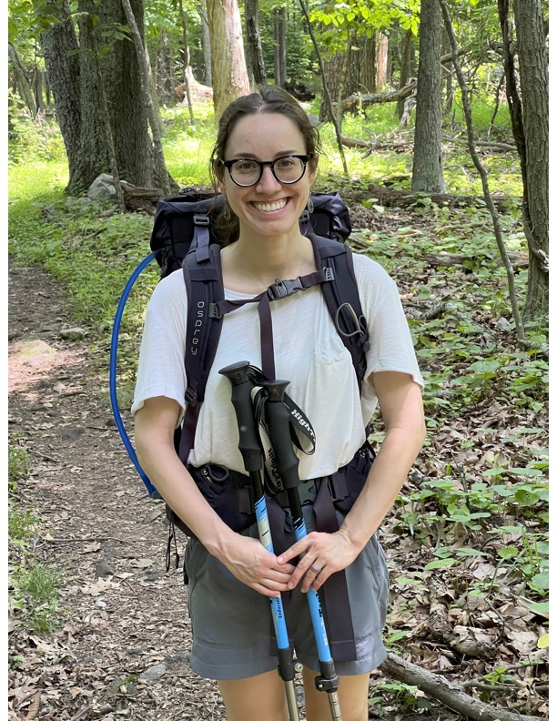

 Hi! I am a Montreal-born Speech & Language pathologist and researcher in Developmental Psychology. I recently obtained my Ph.D. from the University of California San Diego, where I worked in collaboration with Dr. David Barner in the Language and Development Lab. My research was supported by an SSHRC doctoral grant.
Broadly, I am interested in how young children learn basic mathematical concepts/skills - e.g., numbers, counting, and estimation – and specifically, I study how natural language contributes to the development of these mathematical representations. I approach this puzzle by studying bilingual children (e.g., French-English, Spanish-English speakers) because I believe that by documenting the similarities and differences across languages, we can learn more about the role of language-specific experiences in the development of numerical representations. For example, previous studies (and some of my own work) have shown that some skills - such as addition/multiplication facts and knowledge of the relation between number words in the count list (e.g., the knowledge that 20 is twice 10) - are resistant to transfer across languages while other skills - e.g., knowing the procedural steps to build sets of objects (also known as the Cardinal Principle) – are more permeable across languages. Moving forward, I want to expand this line of work and our understanding of the intersection between mathematical thoughts and natural language.
Beyond using bilingualism as a case study for the role of language in numerical representations, I am also interested in bilingualism in and of itself, stemming from personal experience and because bilingualism is increasingly experienced by young learners throughout the world. One of my hope in studying bilingualism is to help improve teaching practices in early Education.
Finally, as an SLP, I have always been interested in early literacy and what makes books interesting for children, and how we can facilitate/bootstrap learning through literacy. Recently, as a personal project, I started to review picture books for children on the topic of numeracy/STEM and blog about how the content of the books is reflected in research and vice-versa. For more info, see the blog posts below.
Finally, when I am not working on research or teaching, I like to bake goods using all types of different squashes. I am also an avid backpacker, maple syrup enthusiast and Beaver Believer.